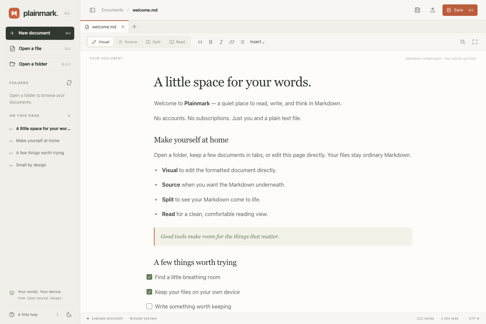

Your files stay yours.
Work with ordinary Markdown files on your own device. No upload, account, or cloud connection needed to write.
Markdown, with room to think.
A free, open-source Markdown viewer and editor for Windows, macOS, and Linux. Open a folder. Write directly in your document. Keep everything in plain Markdown.
Choose the computer you want to install Plainmark on.
Windows 10 / 11 · Microsoft Store-signed · Internet required.
View Microsoft Store listing · Standalone EXE (unsigned)
Some managed computers restrict Store installations. The standalone EXE may show a security prompt.
winget install --id 9PB6H8Z02K0G --source msstorePowerShell or Command Prompt. Requires WinGet and Store access.
macOS 11+ · Signed & notarized. Choose your Mac’s chip.
brew install --cask gopalasubramanium/plainmark/plainmark@previewRun in Terminal. Requires Homebrew; the “preview” cask installs v0.4.0.
Linux x64 · Requires WebKitGTK 4.1. Compatibility varies by distribution.
curl -fLO https://github.com/gopalasubramanium/plainmark/releases/download/v0.4.0/Plainmark_0.4.0_amd64.AppImage && chmod +x Plainmark_0.4.0_amd64.AppImageRequires curl and WebKitGTK 4.1 on x64 Linux. Saves an AppImage in this folder; open the file to run.
Debian / Ubuntu x64 · Requires WebKitGTK 4.1.
curl -fLO https://github.com/gopalasubramanium/plainmark/releases/download/v0.4.0/Plainmark_0.4.0_amd64.deb && sudo apt install ./Plainmark_0.4.0_amd64.debRequires curl, apt, and WebKitGTK 4.1 on x64 Debian / Ubuntu. Asks for administrator approval to install.
No accounts. No ads. No tracking. Always free.

Work with ordinary Markdown files on your own device. No upload, account, or cloud connection needed to write.
Visual editing, folder workspaces, and tabs. Add Mermaid diagrams, math, SVG images, or local interactive HTML. Source and preview scroll together by Markdown block.
Read the code, make a change, or share it with someone. Official releases are free, with no subscriptions or locked features.
Plainmark is a small, independent open-source project. No bundled offers, telemetry, premium tiers, or ads. That is the commitment for official Plainmark releases.
Read our principles